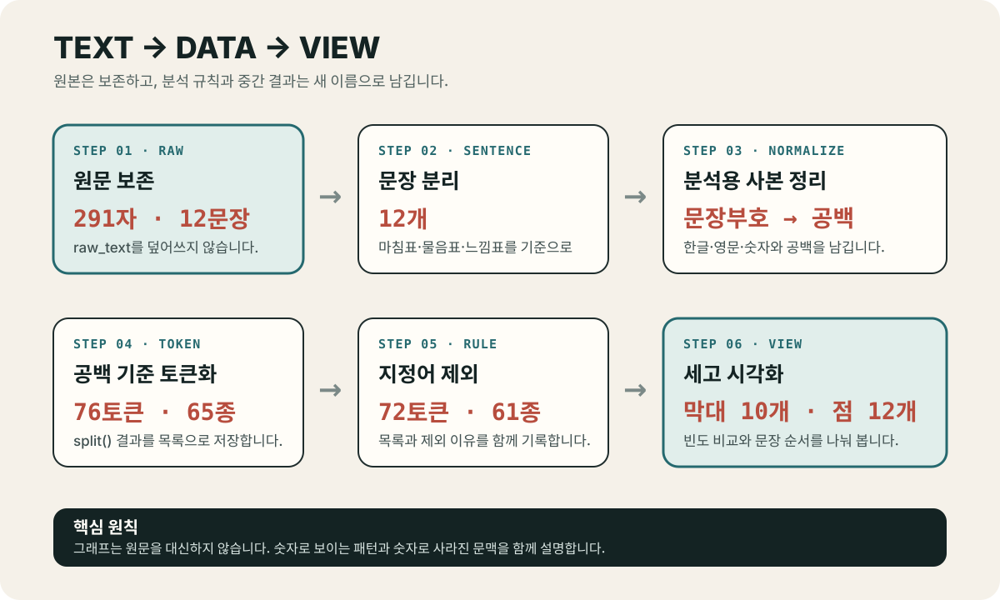

원문을 잃지 않으면서 반복과 흐름을 읽는 텍스트 데이터 입문
오늘의 학습 목표
- 문서, 문장, 토큰, 토큰의 종류와 빈도를 서로 다른 말로 설명할 수 있습니다.
- 원문을 보존한 채 분석용 사본을 만드는 이유를 설명할 수 있습니다.
- 공백 기준 토큰화의 작동 방식과 한국어 분석에서의 한계를 말할 수 있습니다.
- 불용어 제외가 중립적인 청소가 아니라 분석 목적에 따른 선택임을 설명할 수 있습니다.
- 단어 빈도 막대그래프와 문장 길이 흐름 그래프가 답하는 질문을 구분할 수 있습니다.
- 텍스트의 출처·이용 조건·분석 규칙을 기록하고 사적인 텍스트를 안전하게 다룰 수 있습니다.
- 0-6분11주차 연결
설명 문장을 새로운 데이터로 다시 봅니다.
- 6-15분분석 단위
문서·문장·토큰·종류·빈도를 구분합니다.
- 15-25분분석 흐름
원문에서 그래프까지 여섯 단계를 익힙니다.
- 25-34분지정어 제외
보이지 않게 할 단어와 그 이유를 기록합니다.
- 34-42분시각화 선택
막대그래프와 문장 흐름의 역할을 비교합니다.
- 42-48분책임 있는 이용
문맥·저작권·개인정보·출처를 점검합니다.
- 48-50분개별 회수
질문과 분석 규칙을 한 문장으로 정리합니다.
수업 운영: 기본 50분과 확장 60분
기본 50분에는 텍스트를 나누고 세는 개념, 두 그래프의 역할, 해석과 이용의 책임까지 다룹니다. 모든 개별 확인이 끝난 경우에만 50-60분 확장에서 빈도가 높은 단어를 원래 문장으로 되돌려 읽습니다. Python 코드는 2교시에서 셀 단위로 실행합니다.
프로그래밍을 몰라도 먼저 붙잡을 문장
텍스트 분석은 글을 숫자로 바꾸어 끝내는 일이 아니라, 어떤 단위와 규칙으로 셌는지 밝히고 그 숫자를 다시 문맥과 연결하는 일입니다.
0-6분 · 11주차의 설명 문장을 새로운 데이터로 보기
11주차에는 정제된 수치 데이터를 막대그래프와 산점도로 표현하고, 질문형 제목과 관찰 문장으로 포스터의 읽는 방향을 정했습니다. 그때 제목과 주석은 그래프 바깥의 장식이 아니었습니다. 어떤 수치를 먼저 보고 어떻게 해석할지를 안내하는 언어적 선택이었습니다.
12주차에는 시선을 반대로 돌립니다. 지금까지 숫자를 설명하던 문장 자체를 분석 대상으로 삼습니다. 글을 한 번 읽을 때는 분위기와 서사를 느낄 수 있습니다. 같은 글을 문장 길이와 단어 빈도로 바꾸면 반복되는 표현과 구조의 변화가 더 잘 보입니다. 그러나 화자의 태도, 비유, 반어와 이야기의 맥락은 숫자만으로 충분히 드러나지 않습니다.
| 표현 | 주로 보이는 것 | 잘 보이지 않는 것 | 답할 수 있는 질문 |
|---|---|---|---|
| 원문 | 서사, 분위기, 문장 사이의 관계 | 전체에서 반복된 단어의 정확한 횟수 | 어떤 장면과 의미가 이어지는가? |
| 토큰 목록 | 컴퓨터가 세는 최소 단위와 순서 | 문장 전체의 자연스러운 의미 | 어떤 문자열을 하나로 세는가? |
| 빈도표·막대그래프 | 반복 횟수와 순위 | 단어가 사용된 문장과 태도 | 어떤 토큰이 몇 번 반복되는가? |
| 문장 길이 흐름 | 문장 순서에 따른 길이 변화 | 문장이 길어진 구체적인 이유 | 어느 문장이 상대적으로 길거나 짧은가? |
숫자만 보고 알 수 없는 것 찾기
“‘빛’이라는 토큰이 3회 등장한다”라는 정보만으로 화자가 빛을 좋아한다고 결론 내릴 수 있는지 판단합니다. 결론을 내리기 위해 추가로 읽어야 할 정보를 한 가지 적습니다.
확인: ‘빛’이 가장 많이 나왔으므로 이 글의 주제는 희망이라고 써도 되는가?
그렇게 단정할 수 없습니다. 빈도는 문자열이 반복된 횟수만 보여 줍니다. 빛이 희망인지, 경계인지, 단순한 공간 묘사인지는 단어가 포함된 문장과 글 전체를 다시 읽어 판단해야 합니다.
6-15분 · 문서, 문장, 토큰, 종류와 빈도를 구분하기
텍스트를 세기 전에 무엇을 하나로 볼지 정해야 합니다. 표 데이터에서 관찰 단위를 먼저 정했듯이, 텍스트에서도 분석 단위를 먼저 정합니다. 오늘은 한 편 전체를 문서, 마침표·물음표·느낌표로 끝나는 한 덩어리를 문장, 공백 사이에 놓인 문자열을 토큰으로 정합니다.
오늘의 공통 예제: 수업 창작 텍스트 「밤의 도서관」
밤의 도서관은 조용히 문을 연다. 작은 빛 하나가 긴 책상 위에 머문다. 학생은 빛 아래에서 오래된 지도를 펼친다. 지도에는 사라진 골목과 낯선 이름이 남아 있다. 학생은 지도 옆에 작은 메모를 남긴다. 메모에는 빛, 골목, 질문이라는 세 단어가 적힌다. 질문은 길을 만들고 길은 새로운 이야기를 부른다. 이야기는 창가의 빛을 따라 천천히 길어진다. 도서관은 늦은 시간에도 조용한 이야기를 품는다. 학생은 마지막 문장을 읽고 지도를 접는다. 문은 닫히지만 질문은 메모 속에 남는다. 다음 밤이 오면 빛은 다시 문을 연다.
| 용어 | 이번 수업의 뜻 | 예시 | 수량 |
|---|---|---|---|
| 문서 document | 분석하는 글 한 편 전체 | 「밤의 도서관」 전체 | 1편 |
| 문장 sentence | 지정한 문장부호로 나눈 한 덩어리 | “작은 빛 하나가 긴 책상 위에 머문다.” | 12문장 |
| 토큰 token | 공백을 기준으로 나눈 문자열 한 개 | 작은, 빛, 하나가 | 원문 76개 |
| 종류 type | 중복을 한 번만 센 서로 다른 토큰 | 빛은 세 번 나와도 한 종류 | 원문 65종 |
| 빈도 frequency | 같은 토큰이 반복된 횟수 | 빛 3회, 학생은 3회 | 토큰마다 다름 |
토큰 수는 중복을 포함해 목록의 길이를 센 값이고, 종류 수는 같은 토큰을 한 번만 남겨 센 값입니다. “빛, 학생은, 빛”에는 토큰이 세 개 있지만 종류는 두 개입니다. 빈도는 빛: 2, 학생은: 1입니다.
토큰은 언제나 사전 속 단어와 같지 않다
공백 기준으로 나누면 학생, 학생은, 학생이를 서로 다른 토큰으로 셉니다. 한국어의 조사와 어미를 분리하는 형태소 분석과 같지 않습니다. 이번 규칙은 초보자가 변환 과정을 직접 확인하기 위한 단순한 출발점입니다.
확인: 빛, 빛은, 빛을은 오늘 몇 종류로 세는가?
세 종류로 셉니다. 공백 기준 토큰화는 세 문자열을 그대로 비교하기 때문입니다. 뜻의 중심이 비슷하다는 사실을 자동으로 합치지 않습니다.
확인: 문장 끝에 마침표가 두 개 연속으로 있으면 빈 문장이 하나 생기는가?
분리 결과에는 빈 문자열이 생길 수 있습니다. 2교시에는 앞뒤 공백을 없앤 뒤 내용이 있는 조각만 남겨 빈 문장을 제외합니다. 무엇을 문장 경계로 볼지도 분석 규칙에 포함됩니다.
15-25분 · 원문에서 시각화까지 여섯 단계를 분리하기
한 번에 그래프를 만들려고 하면 어느 단계에서 값이 달라졌는지 찾기 어렵습니다. 원문, 문장, 정규화된 텍스트, 원문 토큰, 분석용 토큰, 빈도표를 서로 다른 이름으로 저장하면 각 단계의 입력과 출력을 비교할 수 있습니다.

| 단계 | 새 결과 | 바뀌는 것 | 확인할 수량 |
|---|---|---|---|
| 1. 원문 보존 | raw_text | 아무것도 바꾸지 않음 | 291자, 마침표 12개 |
| 2. 문장 분리 | sentences | 문장 경계마다 목록 항목 생성 | 12문장 |
| 3. 정규화 | normalized_text | 지정한 문장부호를 공백으로 변경 | 원문의 글자와 비교 |
| 4. 토큰화 | raw_tokens | 공백 사이 문자열을 목록으로 분리 | 76토큰, 65종 |
| 5. 지정어 제외 | tokens | 공개한 목록과 일치하는 토큰만 제외 | 72토큰, 61종 |
| 6. 집계·시각화 | 빈도표와 두 그래프 | 반복 횟수와 문장 길이를 시각 요소로 변환 | 막대 10개, 문장 점 12개 |
여기서 정규화는 틀린 문장을 올바르게 고친다는 뜻이 아닙니다. 같은 규칙으로 비교할 수 있도록 분석용 표현을 맞추는 일입니다. 원문에는 문장부호가 가진 리듬과 의미가 남아 있어야 하므로 raw_text를 덮어쓰지 않습니다.
문장부호와 문장 순서를 그대로 보존합니다.
반복 횟수를 상위 단어 막대로 바꿉니다.
원문 순서의 토큰 수를 점과 선으로 바꿉니다.
확인: 문장부호를 지운 텍스트를 raw_text에 다시 저장하면 왜 곤란한가?
어떤 기호가 있었는지, 문장 경계를 어떻게 복원할지 확인하기 어려워집니다. 원본과 분석 결과의 차이도 추적할 수 없습니다. 원문은 그대로 두고 normalized_text라는 새 변수에 정리 결과를 저장합니다.
확인: 쉼표를 삭제할 때 빈 문자열로 바꾸지 않고 공백으로 바꾸는 이유는 무엇인가?
“빛,골목”에서 쉼표를 빈 문자열로 바꾸면 빛골목이라는 새로운 토큰이 생깁니다. 공백으로 바꾸면 빛과 골목의 경계를 유지할 수 있습니다.
25-34분 · 불용어 제외는 분석자가 내리는 선택이다
불용어는 현재 질문에서 분석 대상으로 사용하지 않기로 정한 토큰입니다. 영어의 관사처럼 매우 자주 등장하는 기능어를 제외하기도 하고, 자료 수집 과정에서 반복된 문구를 제외하기도 합니다. 그러나 모든 글에 통하는 영원한 불용어 목록은 없습니다.
오늘의 공통 실습에서는 공간 관계를 나타내는 위에, 아래에서, 옆에, 속에 네 토큰을 지정어로 제외합니다. 이 결정은 상위 내용어의 반복을 보는 연습을 같은 조건에서 수행하기 위한 수업 규칙입니다. 만약 질문이 “공간을 나타내는 말은 어떻게 쓰였는가?”라면 이 네 토큰을 제외해서는 안 됩니다.
| 구분 | 전체 토큰 | 서로 다른 종류 | 남기는 기록 |
|---|---|---|---|
| 원문 토큰 | 76개 | 65종 | 문장부호만 공백으로 바꾼 목록 |
| 분석용 토큰 | 72개 | 61종 | 제외 목록 네 개와 제외 목적 |
| 차이 | 4개 감소 | 4종 감소 | 어떤 정보가 보이지 않게 되었는지 설명 |
질문에 따라 제외 여부 바꾸기
- 질문 A: “글에서 가장 자주 반복되는 인물과 사물은 무엇인가?”
- 질문 B: “사물이 놓인 공간 관계는 어떻게 표현되는가?”
위에, 아래에서, 옆에, 속에를 각 질문에서 제외할지 남길지 정하고, 판단 이유를 한 문장으로 씁니다.
예시 판단: 질문 A와 질문 B에서 같은 불용어 목록을 사용해야 하는가?
같을 필요가 없습니다. 질문 A에서는 인물과 사물의 반복을 보기 위해 네 토큰을 제외할 수 있습니다. 질문 B에서는 네 토큰 자체가 중요한 관찰 대상이므로 남겨야 합니다. 질문이 바뀌면 분석 규칙도 다시 검토합니다.
확인: 불용어를 많이 지울수록 분석이 더 정확해지는가?
아닙니다. 제외할수록 표는 단순해지지만 글의 중요한 관계와 말투도 사라질 수 있습니다. 제외 목록을 최소한으로 정하고, 원문 토큰 수와 분석용 토큰 수를 함께 제시해야 변화의 규모를 확인할 수 있습니다.
34-42분 · 빈도는 막대로, 문장 순서는 점과 선으로 표현하기
같은 텍스트에서도 질문이 다르면 그래프가 달라집니다. “무엇이 더 자주 등장하는가?”는 범주별 수치를 비교하는 질문이므로 막대의 길이가 적합합니다. “문장이 어떤 순서로 길어지고 짧아지는가?”는 순서에 따른 변화를 보는 질문이므로 문장 번호에 맞춘 점과 선을 사용합니다.

| 질문 | 데이터 | 시각 요소 | 반드시 표시할 것 |
|---|---|---|---|
| 어떤 토큰이 더 자주 나오는가? | 토큰별 빈도 | 세로 위치=토큰, 막대 길이=빈도 | 0에서 시작하는 빈도축, 실제 횟수 |
| 문장 길이는 어디에서 달라지는가? | 문장별 원문 토큰 수 | 가로=문장 순서, 세로=토큰 수 | 1~12 문장 번호, 모든 점의 값 |
| 그 단어는 어떤 뜻으로 쓰였는가? | 단어가 포함된 원문 문장 | 문맥을 보존한 문자 패널 | 앞뒤 문장 또는 충분한 문장 내용 |
워드클라우드를 필수 결과로 사용하지 않는 이유
워드클라우드는 자주 나온 단어를 크게 보여 주어 전체 인상을 빠르게 전달할 수 있습니다. 그러나 서로 다른 글자 수와 모양을 가진 단어의 면적을 눈으로 정확히 비교하기 어렵고, 같은 빈도라도 배치와 방향에 따라 중요도가 달라 보일 수 있습니다. 이번 주에는 공통 기준선에서 길이를 비교하고 실제 횟수를 적을 수 있는 가로 막대그래프를 필수 결과로 사용합니다.
선으로 연결되었다고 시간이 흐른 것은 아니다
문장 길이 그래프의 가로축은 1번부터 12번까지의 등장 순서입니다. 각 문장이 몇 초 동안 이어졌다는 뜻이 아닙니다. “시간이 지날수록 문장이 길어졌다”가 아니라 “원문의 뒤쪽 문장 순서에서 길이가 어떻게 달라졌다”라고 설명합니다.
확인: 막대그래프의 가장 긴 막대를 가장 중요한 단어라고 불러도 되는가?
가장 자주 등장한 토큰이라고 부를 수는 있지만 가장 중요한 단어라고 단정할 수는 없습니다. 한 번만 등장해도 결말을 바꾸는 단어가 있을 수 있습니다. 중요도는 빈도표와 원문을 함께 읽어 판단합니다.
확인: 문장 2번과 4번이 모두 7토큰이면 두 문장의 의미도 비슷한가?
아닙니다. 길이가 같다는 사실만 알 수 있습니다. 어떤 단어를 사용했고 문장 안에서 어떤 관계를 만들었는지는 원문을 다시 읽어야 합니다.
42-48분 · 텍스트의 문맥·저작권·개인정보를 함께 기록하기
텍스트는 수치표보다 출처와 사람의 흔적을 직접 드러내기 쉽습니다. 소설과 가사에는 창작자의 권리가 있고, 대화와 일기에는 이름을 지워도 관계·장소·사건을 통해 개인을 알아볼 수 있는 정보가 남을 수 있습니다. 이번 수업은 법률 판단을 대신하지 않으며, 학생이 안전하게 학습할 수 있도록 아래의 운영 기준을 사용합니다.
| 자료 유형 | 필수 과제 사용 | 확인할 내용 | 안전한 대안 |
|---|---|---|---|
| 수업 창작 텍스트 | 사용 가능 | 수업 제공 자료와 교육 목적 이용 조건 기록 | 세 편 중 한 편 선택 |
| 자신이 직접 쓴 글 | 조건부 사용 | 타인의 개인정보와 인용문이 포함되지 않았는지 확인 | 개인 식별 내용을 제거한 새 글 작성 |
| 공개 라이선스 텍스트 | 조건부 사용 | 저작물명·저작자·출처·라이선스와 변경 허용 여부 확인 | 이용 조건이 명시된 자료 선택 |
| 가사·소설·영화 대사 전문 | 필수 과제에서 사용하지 않음 | 복제·변형·공개에 필요한 권한 확인 | 수업 창작 텍스트로 같은 분석 수행 |
| 개인 대화·일기·인터뷰 | 필수 과제에서 사용하지 않음 | 당사자의 동의, 식별 가능 정보, 공개 범위 확인 | 가상의 대화문 또는 수업 창작 텍스트 사용 |
텍스트 데이터 카드에 남길 여섯 항목
- 제목: 분석한 문서의 이름
- 작성자 또는 제공자: 누가 만들고 제공했는가?
- 자료 성격: 창작 텍스트, 공개 자료, 개인 작성문 중 무엇인가?
- 이용 조건: 어떤 목적으로 복제·변형·공개할 수 있는가?
- 분석 단위와 규칙: 문장 경계, 토큰화, 제외 목록은 무엇인가?
- 해석 한계: 현재 숫자만으로 단정할 수 없는 것은 무엇인가?
공개 라이선스 자료를 사용할 때는 저작물명, 저작자명, 출처 주소와 이용 조건을 함께 표시합니다. 이용 조건이 불분명하면 공개 결과물에 원문을 포함하지 않고 수업 창작 자료를 사용합니다. 자세한 기준은 한국저작권위원회 공유마당의 자유이용허락표시 안내 ↗에서 확인할 수 있습니다.
확인: 이름을 지운 단체 채팅 내용을 바로 분석해도 되는가?
이번 필수 과제에는 사용하지 않습니다. 이름이 없어도 대화 내용, 시간, 장소와 관계 정보로 사람을 알아볼 수 있고 참여자가 분석과 공개에 동의하지 않았을 수 있습니다. 수업 창작 텍스트로 같은 분석 목표를 달성합니다.
확인: 인터넷에서 읽을 수 있는 글이면 자유롭게 복사해 포스터에 넣어도 되는가?
공개되어 있다는 사실만으로 재사용 조건이 정해지지는 않습니다. 저작자, 출처와 이용 조건을 확인하고 허용된 범위에서 사용해야 합니다. 조건을 확인할 수 없으면 수업 제공 창작 텍스트를 사용합니다.
48-50분 · 질문과 규칙을 기억에서 꺼내기
노트를 덮고 세 문장 완성하기
- 공백 기준 토큰화는 ____________________________________________.
- 빈도 막대그래프는 ____________________________________________.
- 그래프만으로 단정할 수 없는 것은 ______________________________.
예시 답안과 스스로 확인할 기준
“공백 기준 토큰화는 공백 사이의 문자열을 한 토큰으로 나누며 한국어 형태소 분석과 같지 않다. 빈도 막대그래프는 토큰별 반복 횟수를 공통 기준선에서 비교한다. 그래프만으로 단어의 중요도·화자의 의도·감정을 단정할 수 없다.” 세 문장의 표현은 달라도 단위, 비교, 한계가 모두 들어 있으면 됩니다.
50-60분 · 선택 확장: 빈도가 높은 단어를 문맥으로 돌려놓기
빈도표에서 빛은 3회입니다. 그러나 원문에는 빛은과 빛을도 있습니다. 단순한 공백 기준 토큰화가 나눈 문자열을 원래 문장으로 되돌려 보면 같은 어근이 다른 조사와 함께 쓰인 장면을 확인할 수 있습니다.
| 문장 | 원문 문장 | 공백 기준 토큰 |
|---|---|---|
| 2번 | 작은 빛 하나가 긴 책상 위에 머문다. | 빛 |
| 3번 | 학생은 빛 아래에서 오래된 지도를 펼친다. | 빛 |
| 6번 | 메모에는 빛, 골목, 질문이라는 세 단어가 적힌다. | 빛 |
| 8번 | 이야기는 창가의 빛을 따라 천천히 길어진다. | 빛을 |
| 12번 | 다음 밤이 오면 빛은 다시 문을 연다. | 빛은 |
정확히 같은 토큰 빛은 3회지만, 같은 글자열이 포함된 문장은 다섯 개입니다. 어느 수치가 맞고 다른 수치가 틀린 것이 아닙니다. 정확히 같은 토큰의 반복을 묻는지, 같은 글자열을 포함한 표현의 문맥을 묻는지 질문이 다릅니다.
빈도와 문맥을 두 문장으로 함께 설명하기
첫 문장에는 정확한 토큰 빈도를, 두 번째 문장에는 조사까지 포함해 다시 읽었을 때 발견한 차이를 씁니다. “많이 나왔다” 대신 횟수와 문장 번호를 사용합니다.
완성 예시: ‘빛’을 빈도와 문맥으로 함께 설명하기
“공백 기준 토큰 빛은 2·3·6번 문장에서 총 3회 등장한다. 빛을과 빛은까지 원문에서 다시 찾으면 8·12번 문장도 포함되므로, 단순 토큰 빈도만으로 빛과 관련된 모든 표현을 포괄할 수 없다.”
핵심 정리
- 문서는 글 한 편, 문장은 지정한 경계로 나눈 단위, 토큰은 정한 규칙으로 나눈 문자열입니다.
- 토큰 수는 중복을 포함하고, 종류 수는 같은 토큰을 한 번만 셉니다.
- 공백 기준 토큰화는 이해하기 쉽지만 한국어의 조사와 어미를 분리하지 않습니다.
- 원문을 보존하고 문장·정규화·토큰·집계 결과를 새 변수에 저장해야 변화 과정을 확인할 수 있습니다.
- 불용어 제외는 질문에 따른 선택이므로 제외 목록, 목적과 전후 수량을 함께 기록합니다.
- 빈도 막대그래프는 반복 횟수를, 문장 길이 흐름은 원문 순서에 따른 길이 변화를 보여 줍니다.
- 빈도는 중요도·의도·감정을 증명하지 않으므로 원문 문맥과 해석의 한계를 함께 제시합니다.
- 저작자·출처·이용 조건을 확인하고 사적인 텍스트는 동의 없이 사용하지 않습니다.
공식 자료와 추가 읽기
- Python 공식 문서: str.split구분자를 지정하지 않았을 때 연속된 공백을 하나의 경계로 처리하는 문자열 분리 규칙
- Python 공식 문서: 정규표현식 re문장 경계 분리와 분석용 문자 치환에 사용하는 표준 라이브러리
- Python 공식 문서: collections.Counter토큰별 반복 횟수와
most_common()결과의 구조 - 한국저작권위원회 공유마당: 자유이용허락표시 저작물저작물명·저작자·출처·이용허락 조건과 변경 내용을 표시하는 방법
- 개인정보보호위원회: 가명정보 안내이름을 지우는 것만으로 개인정보 위험이 모두 사라지지 않는 이유를 확장해 읽을 공식 자료